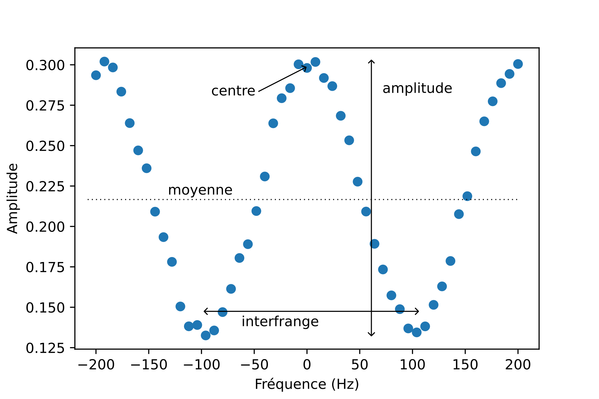

Fit de franges d’interférence¶
On souhaite ajuster les franges d’un interféromètre atomique. Les données sont dans le fichier data/fit_sinus.dat. La première colonne du fichiers (axe x) représente une fréquence en Hz. La seconde colonne représente la population mesurée pour une fréquence donnée. L’objectif est de trouver la position de la frange centrale.
Voici à quoi ressemblent les données :
{kind=link}
On ajustera par une fonction cosinus avec une amplitude, une moyenne, une position de la frange centrale et une largeur ajustable (interfrange), soit en tout quatre paramètres.
Lire le fichier et tracer les données.
Écrire la fonction de fit qui dépend des paramètres ci dessus. On appellera frange(x, …). Tracez la courbe pour x entre ±220 Hz avec des paramètres raisonables. On prendra un inter-frange de 200 Hz.
Calculer les paramètres optimaux. Quelle est la position la frange centrale ? Représentez les points et la courbe.
Quelle est l’incertitude sur la position de la frange centrale ?
Solution¶
import matplotlib.pyplot as plt
from scipy.optimize import curve_fit
import numpy as np
freq, amp = np.loadtxt('data/fit_sinus.dat', unpack=True)
fig = plt.figure()
ax = fig.subplots(1, 1)
ax.plot(freq, amp, 'o')
ax.set_xlabel('Fréquence (Hz)')
ax.set_ylabel('Amplitude')
Text(0, 0.5, 'Amplitude')
def frange(x, a, b, f_0, Delta_f):
return a + b*np.cos(2*np.pi*(x-f_0)/Delta_f)
p0 = (0.2, 0.1, 0, 200)
f_plot = np.linspace(-220, 220)
fig = plt.figure()
ax = fig.subplots(1, 1)
ax.plot(freq, amp, 'o')
ax.plot(f_plot, frange(f_plot, *p0))
ax.set_xlabel('Fréquence (Hz)')
Text(0.5, 0, 'Fréquence (Hz)')
p_opt, p_cov = curve_fit(frange, freq, amp, p0=p0)
fig = plt.figure()
ax = fig.subplots(1, 1)
ax.plot(freq, amp, 'o')
ax.plot(f_plot, frange(f_plot, *p_opt))
ax.set_xlabel('Fréquence (Hz)')
Text(0.5, 0, 'Fréquence (Hz)')
a, b, f_0, Delta_f = p_opt
incertitude = np.sqrt(p_cov[2, 2])
print(f"Position de la frange :{f_0:.2f}")
print(f"Incertitude de la frange :{incertitude:.2f}")
Position de la frange :2.37
Incertitude de la frange :0.32